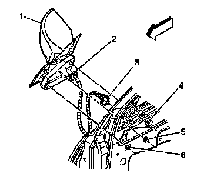

Power Mirror Replacement
Power Mirror Replacement
Removal Procedure

1. Remove the door trim panel. Refer to Front Side Door Trim Panel Replacement (Service and Repair) .
2. Disconnect the power mirror wire harness electrical connector (3).
3. Remove the mirror fasteners (4, 5, 6).
4. Remove the mirror (1) from the door.
5. Pull the wiring harness through the hole in the mirror patch.
Installation Procedure
1. Route the mirror wiring harness through the hole in the mirror patch.
2. Seat the grommet (2) into the hole in the door frame.
3. Install the mirror (1) into the door frame.
Notice: Refer to Fastener Notice (Fastener Notice) .
4. Install the mirror fasteners in the following sequence:
1. Tighten the top mirror fastener (4) to 9 N.m (80 lb in).
2. Tighten the forward mirror fastener (5) to 9 N.m (80 lb in).
3. Tighten the rear, lower mirror fastener (6) to 9 N.m (80 lb in).
5. Connect the power mirror electrical connector (3).
6. Install the door trim panel. Refer to Front Side Door Trim Panel Replacement (Service and Repair) .